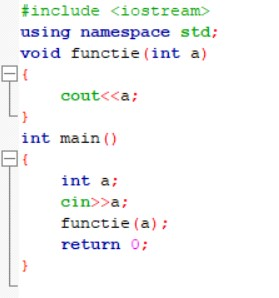
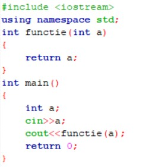
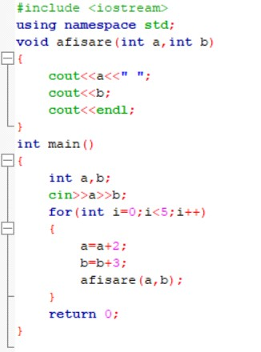

Un subprogram (funcție) este o colecție de tipuri de date, variabile, instrucțiuni care îndeplinesc o anumită sarcină (calcule, citiri, afișări), atunci când este apelat (folosit) de un program sau de un alt subprogram.
Subprogramele pot fi de două tipuri:
Un șir de caractere se declară în limbajul C++ astfel:
funcții - subprograme care determină un anumit rezultat, o anumită valoare, pornind de la anumite date de intrare. Spunem că valoarea este returnată de către funcție, iar aceasta va fi apelată ca operand într-o expresie, valoarea operandului în expresie fiind de fapt valoarea rezultatului funcției.
proceduri – subprograme care se folosesc într-o instrucțiune de sine stătătoare, nu într-o expresie. Ele îndeplinesc o sarcină, au un efect și nu returnează un rezultat. De exemplu, citirea unor variabile, afișarea unor valori, transformarea unor date, etc.
Beneficiile subprogramelor
1.Reutilizarea codului
2.Modularitatea și structurarea
3.Abstracția și incapsularea
4.Eficiența și performanța
5.Testabilitate și depanare mai ușoară
6.Flexibilitate și extensibilitate
Funcții void
Sunt situații când dorim să folosim aceeași bucată de cod în mai multe locuri într-un program . Funcțiile void sunt funcții procedurale - care nu returnează valori și se apelează ca instrucțiuni separate.
Exemplu de funcție void:

Diferențele față de funcțiile operand
La definire, în loc de tipul rezultatului se scrie void. Este un cuvânt cheie care aici indică faptul că funcția este procedurală, nu returnează valoare.
Apelul unei astfel de funcții se face ca instrucțiune separată, cum se poate vedea mai sus, și nu în cadrul unei expresii.
Instrucțiunea return poate fi prezentă în funcțiile procedurale, dar fără a fi urmată de o expresie, ci doar de caracterul punct și virgulă. Dacă se ajunge la executarea ei funcția se încheie imediat.
În figura 1 este aceeasi funcție void de mai sus, iar în figura 2 putem observa o funcție operand echivalentă cu prima.

Fig. 1 Fig. 2
Exemplu de reapelare a unei funcții
Putem observa ca funcția din imaginea de mai jos a fost apelată de mai multe ori.
Acesta afișează valorile lui a și b în diferite momente ale execuției programului.
